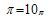

PI DAY!
- Check out pictures of Pi Day here.
-
The student winners of the Pi Recitation contest were:
1st place: Kyle, 72 places
2nd place: Andy, 69 places
Recognition should also go to Dr. Gulick, who recited pi to 101 decimal places.
- The winners of the most interesting formula for pi were:
Andy:
Kyle:
Other, perhaps less involved formulas were:
Pat:
Andy: (that is, pi = 10 in base pi)
- Darren also wrote a program that is perhaps the "world's shortest pi program". Here it is:
a=1e2,d,c=994,f[988],e;main(b){for(;b--;d/=b*2-1)b? d=d*b+(f[b]+2)*a,f[b]=d%(b*2-1)-2:printf("%.2d",e+d/a,e=d%a,b=c-=7);}
* Note: If you plan to run this, it won't work with most windows compilers because printf("%.2d",e+d/a,e=d%a,b=c-=7) evaluates right to left instead of left to right.